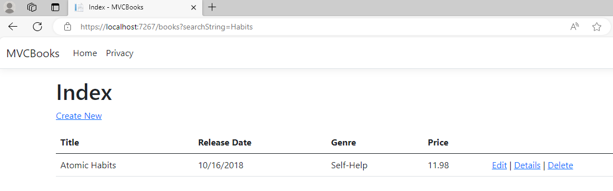
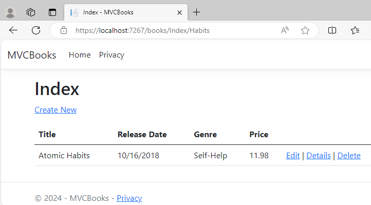
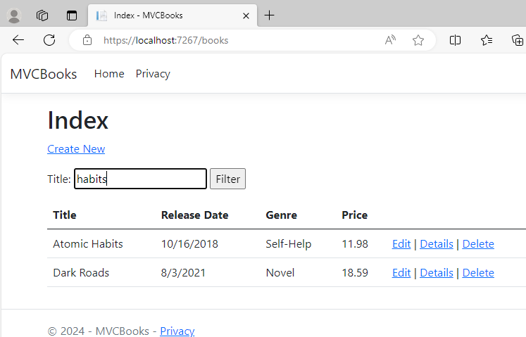
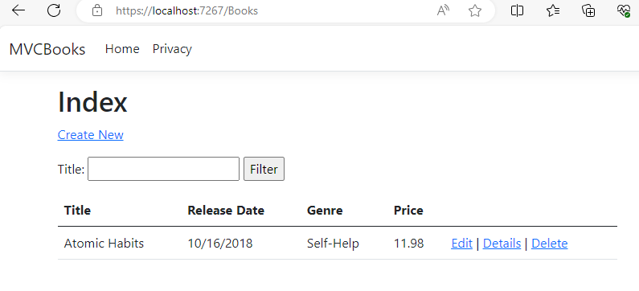
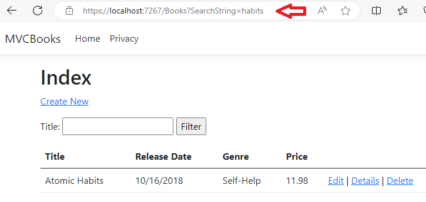
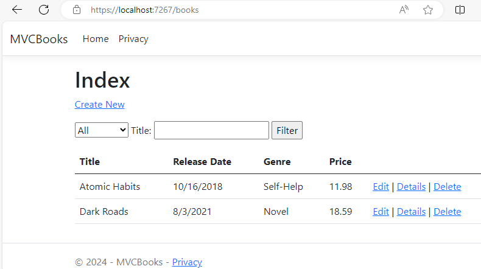
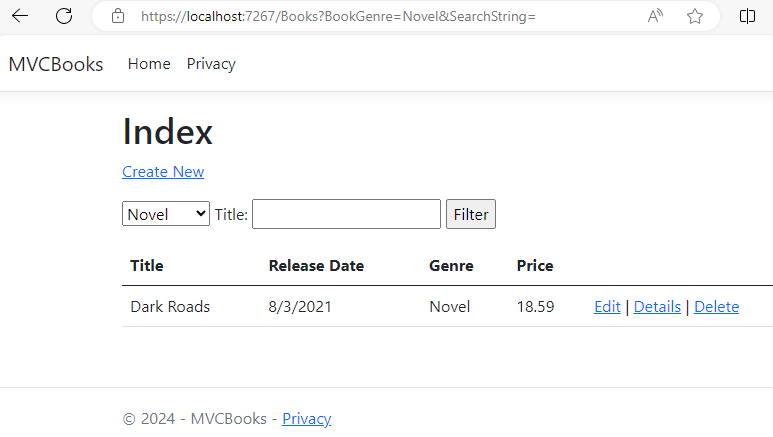

Nội dung bài học
Trong bài này, chúng ta sẽ thêm tính năng tìm kiếm đến ứng dụng MVCBooks theo Title hay Genre. Chúng ta sẽ sử dụng LINQ và nếu bạn chưa quen LINQ thì có thể truy cập tại đây.
Mở tập tin BooksController.cshtml trong Controllers và tìm đến phương thức Index. Thay đổi nội dung Index như sau:
Dòng mã đầu tiên chúng ta tạo một truy vấn LINQ để chọn một đối tượng book. Nếu tham số searchString chứa thông tin tìm kiếm khác Null và khác chuỗi rỗng (kiểm tra nhờ phương thức IsNullOrObject của lớp String), các đối tượng chứa thông tin (trong trường hợp này là Title) trong searchString sẽ được hệ thống lọc và hiển thị:
Có thể chạy thử ứng dụng trong trường hợp này bằng cách lọc thông tin các book có Title chứa chuỗi Habits với URL: https://localhost:7267/books?searchString=Habits (cổng 7267 có thể thay bằng các cổng khác nhau phụ thuộc vào các máy cá nhân)
Nếu thay vì dùng tham số tên searchString, chúng ta thay đổi tên tham số là id khớp với id trong cấu hình từ Pogram.cs:
Phương thức Index được thay đổi lại:
Với việc sử dụng id trùng với cấu hình trong Program.cs, chúng ta sẽ thay đổi URL: https://localhost:7267/books/Index/Habits
Tất nhiên chúng ta không mong muốn người dùng nhập thông tin tìm kiếm trong URL, mà chúng ta sẽ cho phép người dùng tìm kiếm thông qua một giao diện (UI). Trước khi tạo giao diện, chúng ta thay đổi phương thức Index bằng cách dùng lại tham số searchString
Mở tập tin Index.cshtml từ Views/Books và thêm đoạn mã <form>
Ở đây chúng ta tạo một form dùng Form Tag Helper. Lưu và thực thi ứng dụng, nhập từ habits trong input
Nhấn nút Filter sẽ cho kết quả giống các trường hợp dùng URL ở trên. Ở đây, chúng ta không cần dùng [HttpPost] cho phương thức Index, đơn giản vì chúng ta chỉ muốn lọc thông tin có sẵn và không làm thay đổi trạng thái của ứng dụng.
Xem lại kết quả tìm kiếm và chú ý URL
URL không thay đổi khi nhấn Filter và điều này sẽ khó khăn trong trường hợp chúng ta muốn bookmark kết quả tìm kiếm hay chia sẻ kết quả cho người khác qua URL.
Chỉnh sửa hạn chế này bằng cách dùng HTTP GET khi thực hiện yêu cầu đến server thông qua việc thêm method = get đến form:
Thực thi lại ứng dụng, gõ habits và nhấn Filter
Lúc này URL xuất hiện tham số searchString cho phép chúng ta bookmark hay chia sẻ đến người khác.
Thêm một lớp tên BookGenreViewModel.cs đến thư mục Models. Thay đổi nội dung lớp như sau:
Lớp này chứa:
Kế tiếp, thay đổi nội dung phương thức Index trong BooksController.cs như sau:
Đoạn mã đầu tiên chúng ta dùng một truy vấn LINQ để nhận toàn bộ các Genre từ cơ sở dữ liệu:
Một SelectList các Genre được tạo từ các Genre khác nhau nhận được từ cơ sở dữ liệu:
Khi người dùng tìm kiếm, thông tin người dùng gõ sẽ được giữ lại trong ô tìm kiếm (Input Textbox). Cuối cùng, giao diện ứng dụng hay nội dung tập tin Index.cshtml được thay đổi như sau:
Chúng ta sử dụng DisplayNameFor là một HTML Helper kết hợp với các biểu thức lambda để tham chiếu đến giá trị các thuộc tính của đối tượng Book bao gồm Title, ReleaseDate, Genre và Price. Chạy ứng dụng
Chọn Novel tại mục All và nhấn nút Filter
Kiểm tra tìm kiếm thông tin Book theo Title, theo Genre hay cả hai.